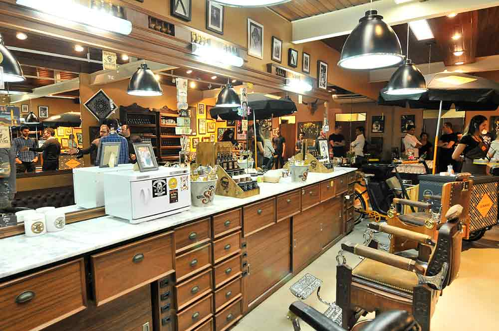
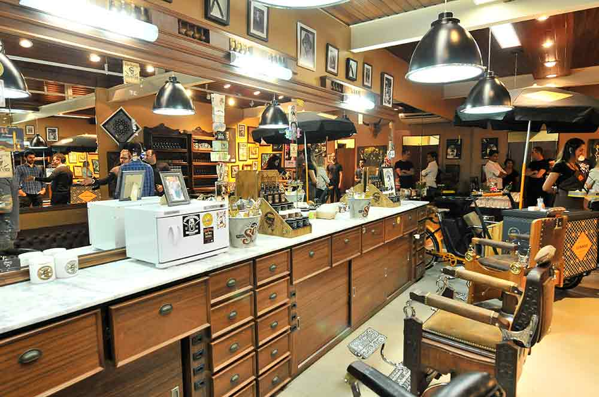

O conceito
Na barbearia, o objetivo é cortar o cabelo e barbear de forma clássica e relaxar. Homens que valorizam um ambiente confortável, em uma atmosfera vintage, buscando não somente um corte bem feito, como uma experiência única.
Unindo as técnicas tradicionais de barbear com a inclusão de cuidados importantes que, no dia a dia, muitos dos homens não se dedicam a fazer, o ritual consiste em um processo que dura em torno de 30 minutos.
O conceito da linha está no resgate de uma cultura do “modernly classic”, que mistura a tradição das antigas barbearias, com cadeiras antigas de madeira, couro e ferro reclináveis. Navalhas e toalhas quentes, com as últimas novidades da cosmética, isto é, pomadas, cremes e xampus especiais para cabelos e barbas masculinos.